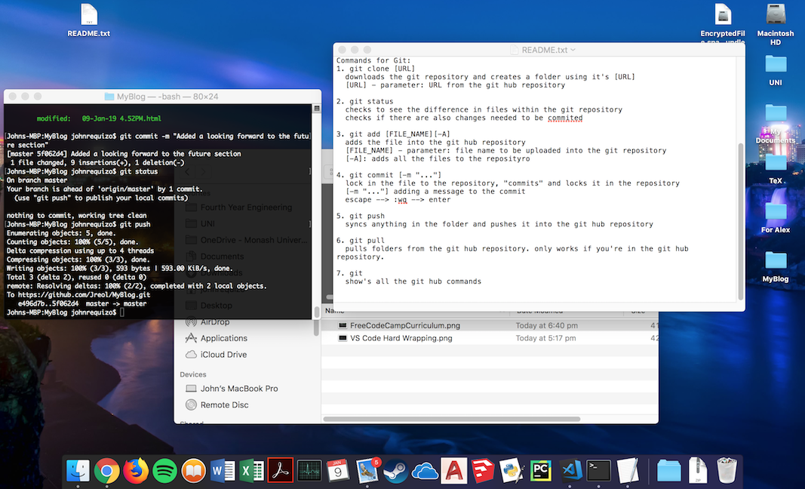
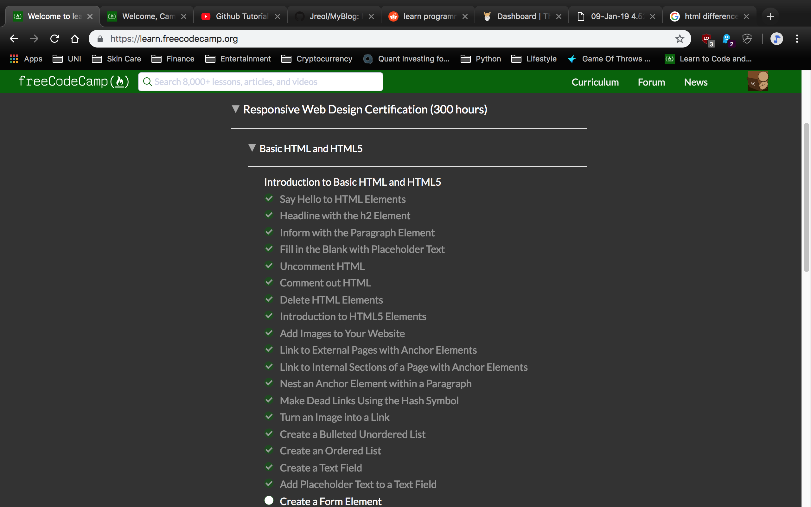

My Progress Today Wed 09-January-2019
Today, I've started my learning progress on Front End Web Development. And what better way to track my progress by creating a blog on a daily/weekly progress. Unfortunately, I am not the best writer, however I aim to make this blog as pleasant to read as possible
Starting the project, I looked into using Git-Hub for the first time ever in my life! haha. Looking at tutorial's on youtube, I manged to stumble upon one that showed the basics of using Git-Hub on my mac. Github Tutorial For Beginners - Github Basics for Mac or Windows & Source Control Basic
Git and Bash Commands I've learnt today
Bash Commands:
- cd - Change Directory
- ls - List Directories
- open - Opens File in the current directory
Git Commands:
- git clone [URL]
- git status
- git add [FILE_NAME]
- git commit -m "message"
- git push
- git pull
Starting HTML
Fortunately, there are plenty of free resources to learn Front End Web Development. One that i'm using is provided by Free Code Camp
With step-by-step instructions and hands on modules to complete, I've found that it's a great way to practice without having a project to work on.
Looking Forward in the Future
So far, the image above has shown the modules that I've progressed through, and hopefully is evident on this small blog. Looking forward, I hope that the next few blog posts will show the progress made, and thus you'll see how much 'better' each blogs are... hopefully. :D I'm also looking forward to improving my writing/blogging skills!
Current Problem's to solve
I've been using VS Code as my main IDE. I've used Bracket's as an IDE before, however, I would prefer to use VS Code since it has extensions for Python and Java, which are other programming languages that I would like to learn.
Currently i've been looking into hard wrapping the code to put it into a newline, as the paragraphs tend to get lost along the large paragraph.

Using the "Rewrap" Extension by stkb managed to solve the problem.
>